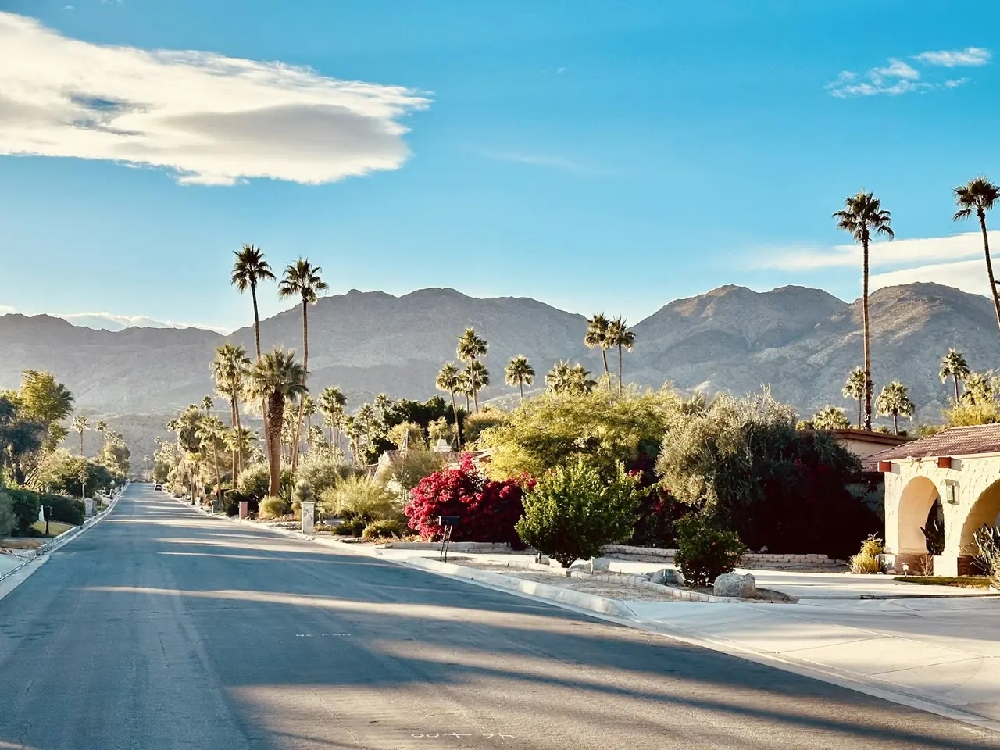

Coachella Festival: Desert World, Music & Art
· By GoldenPath Guide Editorial Team
Every April, the small city of Indio, south of Palm Springs, hosts the world's most famous music festival. Palm trees stretch along the neon-lit desert roads, and the ground hums with the anticipation of a massive crowd. The Coachella Valley Music & Arts Festival is more than a concert — it's music, art, and desert romance fused into a cultural phenomenon. The heat hits you first, then the bass — low and constant, like the desert itself keeping time.
The Empire Polo Club
Coachella takes over the Empire Polo Club, a vast open field in the dusty heart of the desert. Over more than a decade, the festival has drawn close to 200,000 people across its weekends. Its iconic desert garden, monumental art installations, and a crowd that throws itself into the music — together they create an entire world. At dusk the mountains go purple and the installations light up, turning the field into an electric city.
Who's Playing in 2026
In 2026 the headliners are Sabrina Carpenter, Justin Bieber, and Karol G, each taking the stage for two nights. They're joined by dozens of acts — The Strokes, The xx, Iggy Pop, Disclosure, and Wet Leg among them — rocking the desert across six nights. Even before the lineup is confirmed, the speculation itself is part of the festival's excitement.
Weekends & Tickets
Tickets go on sale long in advance through the festival's official site. The event runs as Weekend 1 and Weekend 2, with general admission, VIP, and add-ons like shuttles and camping. Demand is huge, so sell-outs are common; if it's sold out, the official resale exchange lets you buy at face value safely. Start a festival account and turn on alerts around January, when the lineup and schedule are announced.
- GA — the dance-floor standard for most visitors.
- Camping — a full desert-weekend experience, booked well ahead.
- Shuttles — the practical way to come and go from nearby lodging.
Beyond the Festival
Between sets, explore Indio's local spots — Ariola's Tortilleria, serving tamales since 1935, is famously good. Nearby, Pioneertown is a quirky desert village that started as a Western-movie set. Before the shows, hit Palm Springs' vintage shops to put together a festival outfit, then unwind at a Moroccan-inspired boutique hotel under the desert stars. After the final act, the desert sky holds stars so bright they feel like part of the show.
Tickets, Passes and Payment Plans
General admission for a single Coachella weekend typically runs $500 to $600 before fees, with the advance presale in June selling out the lowest tier within days. VIP passes run $1,100 to $1,300 and add shaded lounges, cleaner restrooms and shorter bar lines — worth it for travelers attending all three days. Shuttle-plus-admission bundles add about $130 and cover the hotel-to-field routes from Palm Springs, Palm Desert and La Quinta. The festival's payment plan splits the total across monthly installments from purchase through February, which is how most first-timers afford it. Resale prices climb 50 to 100 percent above face value by March, so the presale or a verified fan-exchange purchase before January is the realistic path. Weekend one and weekend two share identical lineups; weekend two historically shows thinner crowds and easier same-week lodging.
Where to Stay: La Quinta, Palm Springs and Camping
Lodging is the second budget line and the first thing to sell out. La Quinta and Indio hotels within 15 minutes of the field charge $400 to $700 a night on festival weekends with three-night minimums — book by October for normal selection. Palm Springs, 25 to 35 minutes west, runs $350 to $600 with far more rooms and the shuttle network to match. Budget travelers use the festival's car-camping lots at about $150 per spot for the weekend, which sleeps up to four with gear; tent-camping packages with showers run higher but remove the hotel math entirely. Vacation rentals across the valley impose festival-weekend premiums of two to three times normal rates plus strict occupancy enforcement. Whatever the base, confirm the shuttle stop distance before booking — a "Palm Springs" listing 40 minutes from the pickup point ruins the plan.
Desert Survival Kit and Getting In and Out
April afternoons in Indio reach the mid-90s, and the field offers little shade. Pack a sealed refillable water bottle — refill stations are free and lines run shortest before 3 p.m. — plus sunscreen, a wide-brim hat and a bandana for dust when the wind picks up after sunset. Wear broken-in boots or sturdy sneakers; the polo-field grass turns to dust by Sunday and sandals fail by day two. Phone batteries die fast in the heat, so a 10,000 mAh power bank is standard kit. Entry lines peak 2 to 5 p.m.; arriving before 1 p.m. or after 6 p.m. cuts the wait from 90 minutes to under 30. Skip the rideshare lot at headliner closing time, when surge pricing triples fares — take the shuttle back and rideshare from the hotel zone instead. Monday-morning I-10 westbound congestion adds an hour; leave before 8 a.m. or after noon.